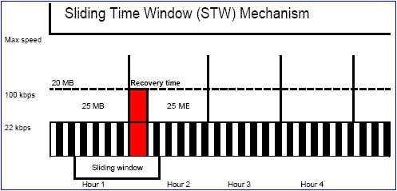

Les nombres en Python

Aller, un petit article pour débutant pour changer: la représentation des nombres en Python.
La suiteQuelques bonnes raisons de plus d’utiliser iPython

Le shell Python est vraiment pratique pour expérimenter, apprendre le langage, tester un snippet vitos ou administrer son site à distance. Mais iPython, ola, iPython, il déchire sa génitrice avec une poutrelle en verre pilé.
La suiteHeapq, le module Python incompris

heapq est un algorythme qui organise une liste sous forme d’arbre binaire. Vous voyez c’était simple non ? Non ?
La suiteImplémenter une fenêtre glissante en Python avec un deque
On a déjà vu comment implémenter l’itération par morceaux sur un itérable de n’importe quelle taille. Grâce au deque, on peut aussi facilement créer une fenêtre glissante.
La suiteFaire des enums en python
")
Dans le C++, il existe quelque chose que j’avais trouvé bien sympa : les enums. Nous allons voir dans cet article comment créer des variables de ce type en python. Cet article comporte des nichons, des feux rouges et des chanteurs pas encore morts.
La suiteRSS est une API
 et c'était dans les premiers résultats. Je le jure !")
On a prédit la mort de RSS (et atom que j’assimile ici) 500 fois déjà. C’est un truc de geek, personne l’utilise, gnagnagnagna.
Seulement RSS, ce n’est pas juste le truc qui me permet de faire ma veille informationelle tous les jours en 1 h plutôt que 6. C’est aussi une API standard.
La suitePersonnalisez le démarrage d’iPython

iPython, c’est bon. Et ça peut être encore meilleur.
La suiteConvertir du binaire en ASCII et vice versa en Python

Exercice le plus inutile du monde, puisque les usages actuels réels sont des plus limités. Tout au plus cela vous permettra de lire la colonne de droite de paulds.
La suiteVous en pensez quoi de cette idée ?

Un bon petit dump de chat
La suiteLancer une fonction automatiquement à l’arrêt de Python

Vous avez des envies de sortie grandiloquentes ? Ou juste besoin d’un peu de ménage à l’arrêt de la machine virtuelle de Python ?
La suite
Flux RSS

Envoyez des sioux
 On adooooore les bitcoins :
On adooooore les bitcoins :